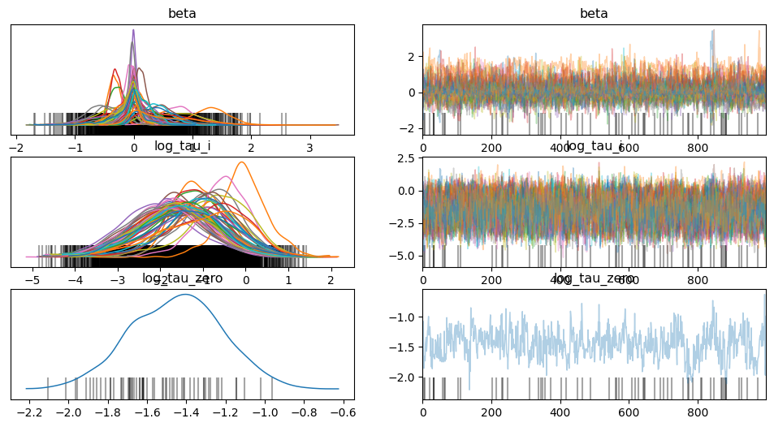
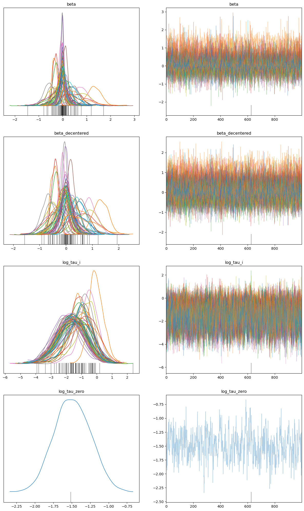

# %pip -qq install numpyro
# %pip -qq install ucimlrepoVariationally Inferred Parameterization
Tutorial also hosted on Numpyro
Occasionally, the Hamiltonian Monte Carlo (HMC) sampler encounters challenges in effectively sampling from the posterior distribution. One illustrative case is Neal’s funnel. In these situations, the conventional centered parameterization may prove inadequate, leading us to employ non-centered parameterization. However, there are instances where even non-centered parameterization may not suffice, necessitating the utilization of Variationally Inferred Parameterization to attain the desired centeredness within the range of 0 to 1.
The purpose of this tutorial is to implement Variationally Inferred Parameterization based on Automatic Reparameterization of Probabilistic Programs using LocScaleReparam in Numpyro.
import jax
import numpyro
import arviz as az
import numpy as np
import pandas as pd
import jax.numpy as jnp
from numpyro.infer import MCMC, NUTS
import numpyro.distributions as dist
from ucimlrepo import fetch_ucirepo
rng_key = jax.random.PRNGKey(0)
# from numpyro.infer.reparam import LocScaleReparam
from numpyro.infer import SVI, Trace_ELBO
from numpyro.infer.autoguide import AutoDiagonalNormalWARNING: All log messages before absl::InitializeLog() is called are written to STDERR
I0000 00:00:1703315439.052736 1 tfrt_cpu_pjrt_client.cc:349] TfrtCpuClient created.from numpyro.distributions import biject_to, constraints, Distribution
from numpyro.distributions.util import is_identically_one, safe_normalize, sum_rightmost
from numpyro.infer.reparam import Reparam
from numpyro.util import not_jax_tracerclass LocScaleReparam(Reparam):
def __init__(self, centered=None, shape_params=()):
assert centered is None or isinstance(
centered, (int, float, np.generic, np.ndarray, jnp.ndarray, jax.core.Tracer)
)
assert isinstance(shape_params, (tuple, list))
assert all(isinstance(name, str) for name in shape_params)
if centered is not None:
is_valid = constraints.unit_interval.check(centered)
if not_jax_tracer(is_valid):
if not np.all(is_valid):
raise ValueError(
"`centered` argument does not satisfy `0 <= centered <= 1`."
)
self.centered = centered
self.shape_params = shape_params
def __call__(self, name, fn, obs):
assert obs is None, "LocScaleReparam does not support observe statements"
support = fn.support
if isinstance(support, constraints.independent):
support = fn.support.base_constraint
if support is not constraints.real:
raise ValueError(
"LocScaleReparam only supports distributions with real "
f"support, but got {support} support at site {name}."
)
centered = self.centered
if is_identically_one(centered):
return fn, obs
event_shape = fn.event_shape
fn, expand_shape, event_dim = self._unwrap(fn)
# Apply a partial decentering transform.
params = {key: getattr(fn, key) for key in self.shape_params}
if self.centered is None:
centered = numpyro.param(
"{}_centered".format(name),
jnp.full(event_shape, 0.5),
constraint=constraints.unit_interval,
)
if isinstance(centered, (int, float, np.generic)) and centered == 0.0:
params["loc"] = jnp.zeros_like(fn.loc)
params["scale"] = jnp.ones_like(fn.scale)
else:
params["loc"] = fn.loc * centered
params["scale"] = fn.scale**centered
decentered_fn = self._wrap(type(fn)(**params), expand_shape, event_dim)
# Draw decentered noise.
decentered_value = numpyro.sample("{}_decentered".format(name), decentered_fn)
# Differentiably transform.
delta = decentered_value - centered * fn.loc
value = fn.loc + jnp.power(fn.scale, 1 - centered) * delta
# Simulate a pyro.deterministic() site.
return None, value1. Dataset
We will be using the German Credit Dataset for this illustration. The dataset consists of 1000 entries with 20 categorial symbolic attributes prepared by Prof. Hofmann. In this dataset, each entry represents a person who takes a credit by a bank. Each person is classified as good or bad credit risks according to the set of attributes.
def load_german_credit():
statlog_german_credit_data = fetch_ucirepo(id=144)
X = statlog_german_credit_data.data.features
y = statlog_german_credit_data.data.targets
return X, yX, y = load_german_credit()
X| Attribute1 | Attribute2 | Attribute3 | Attribute4 | Attribute5 | Attribute6 | Attribute7 | Attribute8 | Attribute9 | Attribute10 | Attribute11 | Attribute12 | Attribute13 | Attribute14 | Attribute15 | Attribute16 | Attribute17 | Attribute18 | Attribute19 | Attribute20 | |
|---|---|---|---|---|---|---|---|---|---|---|---|---|---|---|---|---|---|---|---|---|
| 0 | A11 | 6 | A34 | A43 | 1169 | A65 | A75 | 4 | A93 | A101 | 4 | A121 | 67 | A143 | A152 | 2 | A173 | 1 | A192 | A201 |
| 1 | A12 | 48 | A32 | A43 | 5951 | A61 | A73 | 2 | A92 | A101 | 2 | A121 | 22 | A143 | A152 | 1 | A173 | 1 | A191 | A201 |
| 2 | A14 | 12 | A34 | A46 | 2096 | A61 | A74 | 2 | A93 | A101 | 3 | A121 | 49 | A143 | A152 | 1 | A172 | 2 | A191 | A201 |
| 3 | A11 | 42 | A32 | A42 | 7882 | A61 | A74 | 2 | A93 | A103 | 4 | A122 | 45 | A143 | A153 | 1 | A173 | 2 | A191 | A201 |
| 4 | A11 | 24 | A33 | A40 | 4870 | A61 | A73 | 3 | A93 | A101 | 4 | A124 | 53 | A143 | A153 | 2 | A173 | 2 | A191 | A201 |
| ... | ... | ... | ... | ... | ... | ... | ... | ... | ... | ... | ... | ... | ... | ... | ... | ... | ... | ... | ... | ... |
| 995 | A14 | 12 | A32 | A42 | 1736 | A61 | A74 | 3 | A92 | A101 | 4 | A121 | 31 | A143 | A152 | 1 | A172 | 1 | A191 | A201 |
| 996 | A11 | 30 | A32 | A41 | 3857 | A61 | A73 | 4 | A91 | A101 | 4 | A122 | 40 | A143 | A152 | 1 | A174 | 1 | A192 | A201 |
| 997 | A14 | 12 | A32 | A43 | 804 | A61 | A75 | 4 | A93 | A101 | 4 | A123 | 38 | A143 | A152 | 1 | A173 | 1 | A191 | A201 |
| 998 | A11 | 45 | A32 | A43 | 1845 | A61 | A73 | 4 | A93 | A101 | 4 | A124 | 23 | A143 | A153 | 1 | A173 | 1 | A192 | A201 |
| 999 | A12 | 45 | A34 | A41 | 4576 | A62 | A71 | 3 | A93 | A101 | 4 | A123 | 27 | A143 | A152 | 1 | A173 | 1 | A191 | A201 |
1000 rows × 20 columns
Here, X depicts 20 attributes and the values corresponding to these attributes for each person represented in the data entry and y is the output variable corresponding to these attributes
def data_transform(X, y):
def categorical_to_int(x):
d = {u: i for i, u in enumerate(np.unique(x))}
return np.array([d[i] for i in x])
categoricals = []
numericals = []
numericals.append(np.ones([len(y)]))
for column in X:
column = X[column]
if column.dtype == "O":
categoricals.append(categorical_to_int(column))
else:
numericals.append((column - column.mean()) / column.std())
numericals = np.array(numericals).T
status = np.array(y == 1, dtype=np.int32)
status = np.squeeze(status)
return jnp.array(numericals), jnp.array(categoricals), jnp.array(status)Data transformation for feeding it into the Numpyro model
numericals, categoricals, status = data_transform(X, y)x_numeric = numericals.astype(jnp.float32)
x_categorical = [jnp.eye(c.max() + 1)[c] for c in categoricals]
all_x = jnp.concatenate([x_numeric] + x_categorical, axis=1)
num_features = all_x.shape[1]
y = status[jnp.newaxis, Ellipsis]2. Model
We will be using a logistic regression model with hierarchical prior on coefficient scales
\[\begin{aligned} \log \tau_0 & \sim \mathcal{N}(0,10) & \log \tau_i & \sim \mathcal{N}\left(\log \tau_0, 1\right) \\ \beta_i & \sim \mathcal{N}\left(0, \tau_i\right) & y & \sim \operatorname{Bernoulli}\left(\sigma\left(\beta X^T\right)\right) \end{aligned}\]def german_credit():
log_tau_zero = numpyro.sample("log_tau_zero", dist.Normal(0, 10))
log_tau_i = numpyro.sample(
"log_tau_i", dist.Normal(log_tau_zero, jnp.ones(num_features))
)
beta = numpyro.sample(
"beta", dist.Normal(jnp.zeros(num_features), jnp.exp(log_tau_i))
)
numpyro.sample(
"obs",
dist.Bernoulli(logits=jnp.einsum("nd,md->mn", all_x, beta[jnp.newaxis, :])),
obs=y,
)nuts_kernel = NUTS(german_credit)
mcmc = MCMC(nuts_kernel, num_warmup=1000, num_samples=1000)
mcmc.run(rng_key, extra_fields=("num_steps",))sample: 100%|██████████| 2000/2000 [00:05<00:00, 390.49it/s, 63 steps of size 9.48e-02. acc. prob=0.76]mcmc.print_summary()
mean std median 5.0% 95.0% n_eff r_hat
beta[0] 0.16 0.45 0.06 -0.52 0.73 175.35 1.01
beta[1] -0.33 0.11 -0.34 -0.51 -0.15 402.52 1.00
beta[2] -0.28 0.13 -0.28 -0.49 -0.07 326.71 1.00
beta[3] -0.29 0.10 -0.30 -0.46 -0.14 385.57 1.00
beta[4] -0.01 0.07 -0.01 -0.12 0.09 630.59 1.00
beta[5] 0.12 0.09 0.12 -0.01 0.28 520.89 1.00
beta[6] -0.09 0.09 -0.08 -0.24 0.04 528.06 1.00
beta[7] -0.04 0.08 -0.04 -0.17 0.08 468.54 1.00
beta[8] -0.42 0.35 -0.37 -0.95 0.08 128.69 1.00
beta[9] -0.06 0.28 -0.02 -0.46 0.46 127.10 1.00
beta[10] 0.28 0.35 0.19 -0.19 0.84 178.28 1.00
beta[11] 1.25 0.36 1.29 0.69 1.82 117.82 1.00
beta[12] -0.27 0.35 -0.18 -0.87 0.18 442.81 1.00
beta[13] -0.31 0.34 -0.22 -0.83 0.20 318.44 1.01
beta[14] 0.07 0.21 0.04 -0.19 0.48 247.56 1.00
beta[15] 0.12 0.23 0.07 -0.20 0.53 241.17 1.00
beta[16] 0.77 0.31 0.76 0.25 1.28 262.78 1.00
beta[17] -0.54 0.27 -0.55 -1.00 -0.12 303.51 1.00
beta[18] 0.71 0.43 0.71 -0.02 1.32 302.30 1.00
beta[19] 0.13 0.37 0.04 -0.43 0.72 214.82 1.01
beta[20] 0.03 0.17 0.01 -0.23 0.32 403.52 1.00
beta[21] 0.16 0.20 0.12 -0.15 0.47 331.40 1.00
beta[22] -0.04 0.35 -0.00 -0.58 0.45 309.27 1.00
beta[23] -0.14 0.31 -0.05 -0.65 0.25 274.21 1.01
beta[24] -0.34 0.37 -0.24 -0.95 0.15 356.72 1.00
beta[25] 0.17 0.43 0.05 -0.49 0.85 240.65 1.00
beta[26] -0.01 0.18 -0.01 -0.33 0.25 463.33 1.00
beta[27] -0.40 0.27 -0.40 -0.77 0.08 227.41 1.00
beta[28] -0.09 0.24 -0.04 -0.46 0.28 313.28 1.00
beta[29] 0.00 0.22 -0.00 -0.34 0.34 274.70 1.00
beta[30] 0.31 0.40 0.20 -0.24 0.97 389.17 1.00
beta[31] 0.35 0.32 0.31 -0.09 0.87 194.82 1.00
beta[32] -0.02 0.20 -0.01 -0.39 0.25 367.68 1.01
beta[33] -0.13 0.19 -0.09 -0.39 0.18 304.34 1.00
beta[34] -0.03 0.16 -0.02 -0.27 0.24 314.53 1.00
beta[35] 0.42 0.27 0.42 -0.00 0.82 342.84 1.00
beta[36] 0.05 0.17 0.03 -0.22 0.33 270.04 1.00
beta[37] -0.11 0.24 -0.06 -0.50 0.19 293.60 1.00
beta[38] -0.07 0.19 -0.05 -0.38 0.23 353.75 1.00
beta[39] 0.36 0.25 0.35 -0.03 0.74 304.10 1.00
beta[40] 0.05 0.20 0.02 -0.27 0.37 352.03 1.00
beta[41] -0.01 0.21 -0.02 -0.31 0.38 286.79 1.00
beta[42] -0.11 0.25 -0.05 -0.54 0.27 329.03 1.00
beta[43] 0.58 0.47 0.50 -0.08 1.32 265.76 1.00
beta[44] 0.19 0.20 0.15 -0.10 0.53 293.58 1.00
beta[45] -0.01 0.16 -0.01 -0.28 0.24 329.91 1.00
beta[46] 0.01 0.17 0.00 -0.32 0.25 151.24 1.00
beta[47] -0.21 0.27 -0.14 -0.64 0.19 175.35 1.00
beta[48] -0.11 0.24 -0.06 -0.54 0.22 237.31 1.00
beta[49] -0.04 0.22 -0.02 -0.42 0.28 384.71 1.00
beta[50] 0.39 0.29 0.38 -0.05 0.83 283.57 1.00
beta[51] -0.17 0.22 -0.13 -0.54 0.13 264.01 1.00
beta[52] 0.17 0.20 0.14 -0.10 0.51 306.17 1.00
beta[53] 0.09 0.24 0.03 -0.28 0.48 233.69 1.00
beta[54] 0.04 0.23 0.02 -0.30 0.45 560.22 1.00
beta[55] 0.01 0.15 0.01 -0.23 0.24 605.75 1.00
beta[56] -0.01 0.13 -0.01 -0.24 0.21 612.61 1.00
beta[57] -0.01 0.17 -0.01 -0.29 0.26 380.62 1.00
beta[58] -0.06 0.19 -0.04 -0.39 0.21 284.09 1.01
beta[59] 0.15 0.21 0.11 -0.11 0.51 284.56 1.00
beta[60] -0.13 0.33 -0.05 -0.62 0.39 208.99 1.01
beta[61] 0.53 0.57 0.38 -0.17 1.45 242.27 1.00
log_tau_i[0] -1.45 0.96 -1.44 -2.82 0.27 227.43 1.00
log_tau_i[1] -1.06 0.64 -1.12 -2.01 -0.05 554.22 1.00
log_tau_i[2] -1.20 0.73 -1.19 -2.27 0.07 490.61 1.00
log_tau_i[3] -1.16 0.68 -1.18 -2.32 -0.08 419.73 1.00
log_tau_i[4] -2.09 0.89 -2.12 -3.53 -0.55 475.61 1.00
log_tau_i[5] -1.68 0.78 -1.68 -2.85 -0.30 582.02 1.00
log_tau_i[6] -1.82 0.88 -1.83 -3.11 -0.18 461.32 1.01
log_tau_i[7] -1.99 0.91 -2.00 -3.37 -0.42 349.52 1.00
log_tau_i[8] -1.01 0.86 -0.96 -2.32 0.34 186.45 1.00
log_tau_i[9] -1.55 0.88 -1.53 -2.91 -0.11 344.53 1.00
log_tau_i[10] -1.27 0.93 -1.22 -2.84 0.13 316.71 1.01
log_tau_i[11] -0.06 0.59 -0.06 -0.82 1.08 238.35 1.00
log_tau_i[12] -1.28 0.91 -1.23 -2.87 0.15 424.21 1.00
log_tau_i[13] -1.24 0.92 -1.17 -2.64 0.26 440.32 1.01
log_tau_i[14] -1.67 0.89 -1.66 -3.08 -0.10 293.72 1.01
log_tau_i[15] -1.62 0.93 -1.56 -3.31 -0.21 328.74 1.01
log_tau_i[16] -0.50 0.63 -0.48 -1.56 0.47 361.89 1.00
log_tau_i[17] -0.79 0.71 -0.75 -1.93 0.36 333.02 1.00
log_tau_i[18] -0.64 0.84 -0.57 -2.06 0.62 334.29 1.00
log_tau_i[19] -1.48 0.98 -1.44 -2.95 0.23 170.72 1.01
log_tau_i[20] -1.83 0.91 -1.81 -3.40 -0.48 491.17 1.00
log_tau_i[21] -1.53 0.90 -1.54 -2.87 0.03 410.15 1.00
log_tau_i[22] -1.55 0.99 -1.54 -3.23 0.01 261.14 1.00
log_tau_i[23] -1.60 0.92 -1.59 -3.12 -0.20 308.73 1.01
log_tau_i[24] -1.20 0.97 -1.11 -2.89 0.31 295.55 1.00
log_tau_i[25] -1.42 0.97 -1.37 -3.15 -0.05 218.51 1.00
log_tau_i[26] -1.76 0.86 -1.71 -3.24 -0.40 423.96 1.00
log_tau_i[27] -1.04 0.82 -0.99 -2.36 0.28 326.90 1.00
log_tau_i[28] -1.65 0.96 -1.61 -3.21 -0.09 325.98 1.01
log_tau_i[29] -1.69 0.89 -1.70 -2.98 -0.01 418.01 1.00
log_tau_i[30] -1.24 0.97 -1.23 -3.00 0.26 309.77 1.00
log_tau_i[31] -1.16 0.94 -1.03 -2.93 0.13 352.52 1.01
log_tau_i[32] -1.75 0.97 -1.71 -3.30 -0.15 392.45 1.00
log_tau_i[33] -1.57 0.85 -1.54 -2.99 -0.23 420.93 1.00
log_tau_i[34] -1.81 0.93 -1.81 -3.48 -0.40 272.61 1.00
log_tau_i[35] -1.01 0.79 -0.93 -2.33 0.18 427.14 1.00
log_tau_i[36] -1.71 0.85 -1.69 -3.19 -0.42 277.28 1.00
log_tau_i[37] -1.57 0.97 -1.56 -2.96 0.31 371.83 1.00
log_tau_i[38] -1.65 0.88 -1.62 -3.03 -0.22 474.97 1.00
log_tau_i[39] -1.11 0.89 -1.06 -2.63 0.27 246.36 1.00
log_tau_i[40] -1.70 0.89 -1.68 -3.07 -0.26 356.11 1.00
log_tau_i[41] -1.73 0.91 -1.73 -3.13 -0.06 333.35 1.00
log_tau_i[42] -1.57 0.89 -1.58 -2.97 -0.07 338.73 1.00
log_tau_i[43] -0.84 0.91 -0.73 -2.22 0.63 305.01 1.00
log_tau_i[44] -1.48 0.93 -1.42 -2.95 0.04 338.51 1.00
log_tau_i[45] -1.81 0.89 -1.81 -3.10 -0.21 386.99 1.00
log_tau_i[46] -1.76 0.93 -1.72 -3.41 -0.34 368.09 1.00
log_tau_i[47] -1.45 0.92 -1.44 -3.07 -0.03 325.43 1.00
log_tau_i[48] -1.58 0.91 -1.56 -3.11 -0.21 273.83 1.01
log_tau_i[49] -1.71 0.94 -1.68 -3.48 -0.37 256.16 1.00
log_tau_i[50] -1.07 0.88 -1.01 -2.51 0.36 275.10 1.00
log_tau_i[51] -1.51 0.89 -1.50 -2.91 -0.05 417.23 1.00
log_tau_i[52] -1.56 0.88 -1.51 -2.96 -0.11 341.36 1.00
log_tau_i[53] -1.72 0.90 -1.71 -3.09 -0.16 294.87 1.00
log_tau_i[54] -1.69 0.91 -1.67 -3.11 -0.18 291.98 1.00
log_tau_i[55] -1.87 0.92 -1.86 -3.47 -0.46 526.89 1.00
log_tau_i[56] -1.86 0.91 -1.85 -3.39 -0.39 497.99 1.00
log_tau_i[57] -1.84 0.87 -1.83 -3.24 -0.42 385.89 1.00
log_tau_i[58] -1.70 0.93 -1.68 -3.27 -0.29 530.10 1.00
log_tau_i[59] -1.58 0.90 -1.56 -3.18 -0.24 475.23 1.00
log_tau_i[60] -1.52 0.95 -1.50 -3.32 -0.26 273.32 1.00
log_tau_i[61] -0.94 1.01 -0.83 -2.69 0.51 241.57 1.00
log_tau_zero -1.45 0.24 -1.45 -1.80 -1.02 155.67 1.00
Number of divergences: 61From mcmc.print_summary it is evident that there are 37 divergences. Thus, we will use Variationally Inferred Parameterization (VIP) to reduce these divergences
data = az.from_numpyro(mcmc)
az.plot_trace(data, compact=True);
3. Reparameterization
We introduce a parameterization parameters \(\lambda \in [0,1]\) for any variable \(z\), and transform:
=> \(z\) ~ \(N (z | μ, σ)\)
=> by defining \(z\) ~ \(N(λμ, σ^λ)\)
=> \(z\) = \(μ + σ^{1-λ}(z - λμ)\).
Thus, using the above transformation the joint density can be transformed as follows: \[\begin{aligned} p(\theta, \hat{\mu}, \mathbf{y}) & =\mathcal{N}(\theta \mid 0,1) \times \mathcal{N}\left(\mu \mid \theta, \sigma_\mu\right) \times \mathcal{N}(\mathbf{y} \mid \mu, \sigma) \end{aligned}\] \[\begin{aligned} p(\theta, \hat{\mu}, \mathbf{y}) & =\mathcal{N}(\theta \mid 0,1) \times \mathcal{N}\left(\hat{\mu} \mid \lambda \theta, \sigma_\mu^\lambda\right) \times \mathcal{N}\left(\mathbf{y} \mid \theta+\sigma_\mu^{1-\lambda}(\hat{\mu}-\lambda \theta), \sigma\right) \end{aligned}\]def german_credit_reparam(beta_centeredness=None):
def model():
log_tau_zero = numpyro.sample("log_tau_zero", dist.Normal(0, 10))
log_tau_i = numpyro.sample(
"log_tau_i", dist.Normal(log_tau_zero, jnp.ones(num_features))
)
with numpyro.handlers.reparam(
config={"beta": LocScaleReparam(beta_centeredness)}
):
beta = numpyro.sample(
"beta", dist.Normal(jnp.zeros(num_features), jnp.exp(log_tau_i))
)
numpyro.sample(
"obs",
dist.Bernoulli(logits=jnp.einsum("nd,md->mn", all_x, beta[jnp.newaxis, :])),
obs=y,
)
return modelNow, using SVI we optimize \(\lambda\).
model = german_credit_reparam()
guide = AutoDiagonalNormal(model)
svi = SVI(model, guide, numpyro.optim.Adam(3e-4), Trace_ELBO(10))
svi_results = svi.run(rng_key, 10000)100%|██████████| 10000/10000 [00:05<00:00, 1903.74it/s, init loss: 2165.2427, avg. loss [9501-10000]: 576.7846]reparam_model = german_credit_reparam(
beta_centeredness=svi_results.params["beta_centered"]
)nuts_kernel = NUTS(reparam_model)
mcmc_reparam = MCMC(nuts_kernel, num_warmup=1000, num_samples=1000)
mcmc_reparam.run(rng_key, extra_fields=("num_steps",))sample: 100%|██████████| 2000/2000 [00:04<00:00, 482.98it/s, 31 steps of size 1.10e-01. acc. prob=0.93] mcmc_reparam.get_samples().keys()dict_keys(['beta', 'beta_decentered', 'log_tau_i', 'log_tau_zero'])mcmc_reparam.print_summary()
mean std median 5.0% 95.0% n_eff r_hat
beta_decentered[0] 0.13 0.42 0.06 -0.54 0.78 275.93 1.00
beta_decentered[1] -0.46 0.15 -0.45 -0.70 -0.21 640.20 1.00
beta_decentered[2] -0.37 0.17 -0.37 -0.66 -0.08 532.24 1.00
beta_decentered[3] -0.41 0.14 -0.41 -0.62 -0.16 729.70 1.00
beta_decentered[4] -0.01 0.12 -0.01 -0.19 0.20 893.99 1.00
beta_decentered[5] 0.19 0.14 0.19 -0.01 0.42 878.97 1.00
beta_decentered[6] -0.13 0.14 -0.13 -0.38 0.07 938.88 1.00
beta_decentered[7] -0.07 0.12 -0.06 -0.26 0.13 810.45 1.00
beta_decentered[8] -0.46 0.33 -0.47 -0.95 0.09 278.11 1.00
beta_decentered[9] -0.02 0.32 -0.02 -0.53 0.51 253.14 1.00
beta_decentered[10] 0.35 0.39 0.28 -0.20 0.99 297.60 1.00
beta_decentered[11] 1.30 0.31 1.31 0.81 1.78 304.84 1.00
beta_decentered[12] -0.31 0.39 -0.26 -0.94 0.28 551.22 1.00
beta_decentered[13] -0.39 0.39 -0.33 -1.01 0.22 336.39 1.00
beta_decentered[14] 0.08 0.27 0.06 -0.32 0.54 364.10 1.00
beta_decentered[15] 0.13 0.29 0.10 -0.33 0.61 527.76 1.00
beta_decentered[16] 0.85 0.31 0.86 0.30 1.32 391.70 1.00
beta_decentered[17] -0.64 0.28 -0.65 -1.11 -0.18 434.17 1.00
beta_decentered[18] 0.78 0.42 0.81 0.11 1.49 391.42 1.00
beta_decentered[19] 0.15 0.41 0.09 -0.45 0.91 447.14 1.00
beta_decentered[20] 0.04 0.23 0.02 -0.36 0.41 354.95 1.00
beta_decentered[21] 0.23 0.26 0.21 -0.15 0.65 429.67 1.00
beta_decentered[22] -0.04 0.37 -0.02 -0.65 0.53 808.59 1.00
beta_decentered[23] -0.15 0.33 -0.08 -0.66 0.41 456.72 1.01
beta_decentered[24] -0.40 0.39 -0.34 -1.05 0.20 596.39 1.00
beta_decentered[25] 0.18 0.46 0.11 -0.59 0.89 452.92 1.00
beta_decentered[26] -0.00 0.25 0.01 -0.42 0.39 579.03 1.00
beta_decentered[27] -0.47 0.31 -0.48 -0.91 0.07 245.48 1.00
beta_decentered[28] -0.10 0.31 -0.06 -0.58 0.42 387.49 1.00
beta_decentered[29] 0.01 0.29 -0.00 -0.53 0.45 478.36 1.00
beta_decentered[30] 0.38 0.43 0.29 -0.21 1.08 450.02 1.00
beta_decentered[31] 0.46 0.36 0.44 -0.11 1.02 299.64 1.00
beta_decentered[32] -0.03 0.26 -0.02 -0.45 0.44 548.53 1.00
beta_decentered[33] -0.17 0.24 -0.15 -0.60 0.20 507.06 1.00
beta_decentered[34] -0.02 0.21 -0.02 -0.34 0.36 499.13 1.00
beta_decentered[35] 0.54 0.30 0.55 0.04 1.01 578.79 1.00
beta_decentered[36] 0.09 0.24 0.07 -0.31 0.46 487.44 1.00
beta_decentered[37] -0.15 0.32 -0.10 -0.71 0.31 526.21 1.00
beta_decentered[38] -0.13 0.26 -0.11 -0.59 0.27 351.97 1.00
beta_decentered[39] 0.43 0.27 0.42 -0.02 0.84 383.33 1.00
beta_decentered[40] 0.05 0.26 0.04 -0.39 0.48 537.39 1.00
beta_decentered[41] 0.01 0.29 0.01 -0.43 0.49 376.65 1.00
beta_decentered[42] -0.14 0.32 -0.09 -0.75 0.28 463.26 1.00
beta_decentered[43] 0.66 0.46 0.66 -0.03 1.46 416.53 1.01
beta_decentered[44] 0.25 0.26 0.24 -0.15 0.64 560.15 1.00
beta_decentered[45] -0.01 0.22 -0.01 -0.39 0.35 606.91 1.00
beta_decentered[46] 0.01 0.23 0.01 -0.40 0.34 535.77 1.00
beta_decentered[47] -0.24 0.31 -0.20 -0.73 0.24 432.11 1.00
beta_decentered[48] -0.18 0.31 -0.15 -0.69 0.32 334.89 1.00
beta_decentered[49] -0.06 0.29 -0.04 -0.52 0.44 491.70 1.00
beta_decentered[50] 0.46 0.31 0.48 -0.03 0.97 321.70 1.00
beta_decentered[51] -0.23 0.27 -0.20 -0.64 0.23 367.02 1.01
beta_decentered[52] 0.22 0.26 0.20 -0.17 0.65 325.06 1.00
beta_decentered[53] 0.07 0.29 0.05 -0.46 0.53 580.63 1.00
beta_decentered[54] 0.04 0.30 0.03 -0.42 0.56 475.33 1.00
beta_decentered[55] 0.02 0.22 0.02 -0.30 0.39 803.43 1.00
beta_decentered[56] -0.01 0.19 -0.02 -0.35 0.26 656.58 1.00
beta_decentered[57] 0.01 0.23 0.01 -0.32 0.43 540.58 1.01
beta_decentered[58] -0.08 0.27 -0.08 -0.52 0.35 293.34 1.01
beta_decentered[59] 0.20 0.28 0.17 -0.23 0.64 325.75 1.01
beta_decentered[60] -0.14 0.37 -0.09 -0.77 0.44 256.23 1.00
beta_decentered[61] 0.59 0.57 0.52 -0.23 1.45 381.03 1.00
log_tau_i[0] -1.54 0.95 -1.47 -3.31 -0.15 515.73 1.00
log_tau_i[1] -1.05 0.65 -1.10 -2.21 -0.12 770.10 1.00
log_tau_i[2] -1.22 0.74 -1.21 -2.41 -0.13 605.37 1.00
log_tau_i[3] -1.16 0.66 -1.16 -2.19 -0.03 658.53 1.00
log_tau_i[4] -2.09 0.87 -2.10 -3.50 -0.69 864.75 1.00
log_tau_i[5] -1.70 0.83 -1.68 -2.97 -0.29 756.87 1.00
log_tau_i[6] -1.86 0.91 -1.83 -3.30 -0.37 1082.11 1.00
log_tau_i[7] -2.03 0.92 -2.05 -3.65 -0.65 464.97 1.00
log_tau_i[8] -1.10 0.88 -1.04 -2.50 0.37 413.02 1.00
log_tau_i[9] -1.67 0.87 -1.65 -3.25 -0.43 633.18 1.00
log_tau_i[10] -1.34 0.96 -1.27 -3.00 0.15 437.87 1.00
log_tau_i[11] -0.03 0.49 -0.06 -0.78 0.81 490.94 1.00
log_tau_i[12] -1.35 0.97 -1.29 -2.80 0.27 597.46 1.00
log_tau_i[13] -1.27 0.96 -1.21 -2.85 0.24 591.98 1.00
log_tau_i[14] -1.73 0.94 -1.72 -3.22 -0.09 669.66 1.00
log_tau_i[15] -1.69 0.95 -1.65 -3.43 -0.28 571.40 1.00
log_tau_i[16] -0.52 0.64 -0.50 -1.56 0.56 515.69 1.00
log_tau_i[17] -0.80 0.67 -0.79 -2.00 0.21 558.88 1.00
log_tau_i[18] -0.70 0.83 -0.60 -1.89 0.76 506.17 1.00
log_tau_i[19] -1.54 0.98 -1.50 -3.37 -0.11 506.59 1.00
log_tau_i[20] -1.81 0.90 -1.78 -3.27 -0.36 662.64 1.00
log_tau_i[21] -1.55 0.93 -1.51 -3.09 -0.08 742.04 1.00
log_tau_i[22] -1.60 1.02 -1.54 -3.18 0.15 682.59 1.00
log_tau_i[23] -1.68 0.97 -1.62 -3.24 -0.14 453.56 1.00
log_tau_i[24] -1.23 0.94 -1.14 -2.69 0.32 599.87 1.00
log_tau_i[25] -1.50 1.04 -1.46 -3.08 0.38 381.49 1.00
log_tau_i[26] -1.77 0.92 -1.75 -3.29 -0.26 719.89 1.00
log_tau_i[27] -1.12 0.88 -1.05 -2.56 0.26 332.21 1.00
log_tau_i[28] -1.71 0.94 -1.68 -3.32 -0.24 653.14 1.01
log_tau_i[29] -1.68 0.94 -1.67 -3.24 -0.17 592.44 1.00
log_tau_i[30] -1.27 1.01 -1.20 -3.01 0.33 493.61 1.00
log_tau_i[31] -1.14 0.87 -1.04 -2.67 0.18 422.70 1.00
log_tau_i[32] -1.74 0.98 -1.76 -3.30 -0.20 543.91 1.00
log_tau_i[33] -1.65 0.89 -1.59 -3.04 -0.25 738.85 1.00
log_tau_i[34] -1.87 0.94 -1.83 -3.53 -0.39 585.19 1.00
log_tau_i[35] -0.98 0.82 -0.92 -2.18 0.48 632.48 1.00
log_tau_i[36] -1.75 0.92 -1.69 -3.26 -0.32 676.94 1.00
log_tau_i[37] -1.61 0.98 -1.58 -3.17 0.02 799.87 1.00
log_tau_i[38] -1.68 0.90 -1.64 -3.05 -0.20 584.27 1.00
log_tau_i[39] -1.16 0.85 -1.05 -2.58 0.13 564.75 1.00
log_tau_i[40] -1.73 0.92 -1.69 -3.07 -0.13 643.67 1.00
log_tau_i[41] -1.75 0.94 -1.76 -3.31 -0.32 577.68 1.00
log_tau_i[42] -1.62 0.91 -1.65 -3.19 -0.22 525.10 1.00
log_tau_i[43] -0.79 0.92 -0.74 -2.46 0.56 491.72 1.01
log_tau_i[44] -1.51 0.90 -1.50 -3.17 -0.22 894.90 1.00
log_tau_i[45] -1.84 0.91 -1.82 -3.22 -0.35 916.67 1.00
log_tau_i[46] -1.84 0.89 -1.77 -3.35 -0.45 880.63 1.00
log_tau_i[47] -1.53 0.93 -1.52 -3.17 -0.13 587.07 1.00
log_tau_i[48] -1.56 0.96 -1.50 -3.20 -0.08 541.89 1.00
log_tau_i[49] -1.72 0.93 -1.73 -3.33 -0.30 838.34 1.00
log_tau_i[50] -1.14 0.86 -1.06 -2.43 0.22 377.83 1.00
log_tau_i[51] -1.55 0.90 -1.53 -3.09 -0.13 585.07 1.00
log_tau_i[52] -1.61 0.90 -1.56 -3.02 -0.06 638.21 1.00
log_tau_i[53] -1.71 0.92 -1.68 -3.19 -0.22 634.97 1.00
log_tau_i[54] -1.75 0.93 -1.73 -3.17 -0.10 687.26 1.00
log_tau_i[55] -1.88 0.92 -1.90 -3.35 -0.30 995.19 1.00
log_tau_i[56] -1.89 0.93 -1.88 -3.25 -0.23 788.73 1.00
log_tau_i[57] -1.84 0.94 -1.83 -3.32 -0.20 832.65 1.00
log_tau_i[58] -1.73 0.95 -1.70 -3.29 -0.18 531.53 1.00
log_tau_i[59] -1.61 0.92 -1.57 -3.12 -0.16 524.50 1.00
log_tau_i[60] -1.58 0.97 -1.53 -3.07 0.04 408.84 1.00
log_tau_i[61] -0.97 1.03 -0.88 -2.59 0.71 435.12 1.00
log_tau_zero -1.49 0.25 -1.49 -1.90 -1.10 225.37 1.00
Number of divergences: 1The number of divergences have significantly reduced from 37 to 1.
data = az.from_numpyro(mcmc_reparam)
az.plot_trace(data, compact=True, figsize=(15, 25));
4. References:
- https://arxiv.org/abs/1906.03028
- https://github.com/mgorinova/autoreparam/tree/master